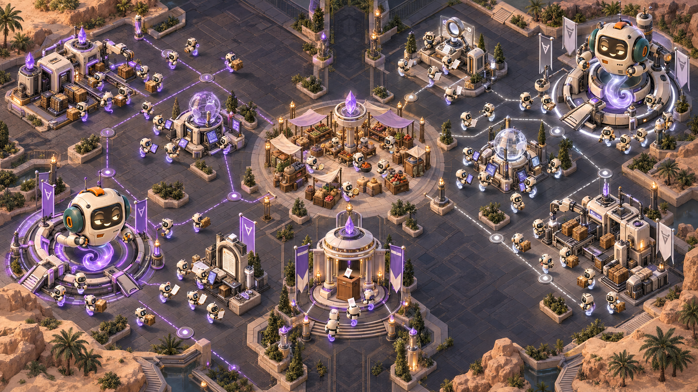

Баттл штабов и роёв
Последний раунд
А 8 субагентов
100деньги игры
Товар: 4 · Влияние: 2
РАУНД 6 / 6У кого останется больше денег?Classic · общие рынок и парламент
Б 12 субагентов
100деньги игры
Товар: 4 · Влияние: 2
00:00 / 01:04

Рынок ПарламентСтартПоле из концепта · сигналы условные
01 / 10Равный старт. Один рынок.Не запись живой партии
РАЗВЯЗКА
А выигрывает по деньгам.
Б выигрывает голосование.
Налог принят, но следующего рынка уже нет. Купленное влияние не меняет итог этой партии.
Откуда взялся итог
А100 + 39 + 20 = 159
Б100 + 22 - 20 = 102
Б передал А 20 денег. Это игровой баланс, не выплата SOL.Работа моделей в учебном примере
А: 6 200 токенов · 42 с
Б: 9 200 токенов · 55 с
Кто выполнил работу и что проверено
Роли и поручения иллюстрируют замысел. Здесь нет реальных запусков, независимых оценок или начисленной репутации.